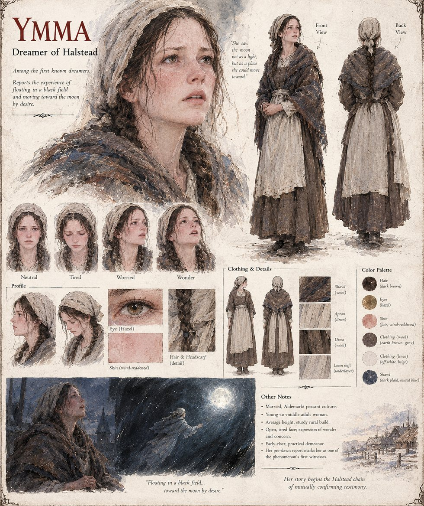

Ymma
Woman of Halstead · among the first known dreamers · young-to-middle adult by her sheet
A woman of Halstead and the first dreamer the manuscript names. On the first night of Brayen, in the iron cold of early spring that Aldemark's peasants call Elara's Fast, she wakes her husband before dawn to tell him she has been nowhere and everywhere, floating in a black field scattered with unfamiliar lights, and that she went toward the moon simply by wishing to, the way a thought goes toward a memory. Her husband tells her it is only hunger dreaming. Three farms over, a boy tells his mother the same thing, unprompted, before she has said a word about it; by the second week no one in Halstead is calling it hunger. Hraban questions her first when he arrives on the twentieth day.
The manuscript names her only at the start and again when Hraban questions her, and does not say what becomes of her in the burning of Halstead. The sheet draws her as a young-to-middle adult of average height and sturdy rural build, with an open, tired, wind-reddened face, hazel eyes and dark brown hair in two braids under a linen headscarf, in a dark plaid muted-blue wool shawl over a brown wool dress and a linen apron; its notes call her married, an early riser of practical demeanor, and one of the phenomenon's first witnesses, and one panel shows her floating toward a full moon.
Appears In

Related Subjects


Related Records

Ymma sits up before dawn on the first night of Brayen, in the iron cold of Elara's Fast, with her husband still asleep beside her. She is about to wake him to say that she has been nowhere and everywhere.